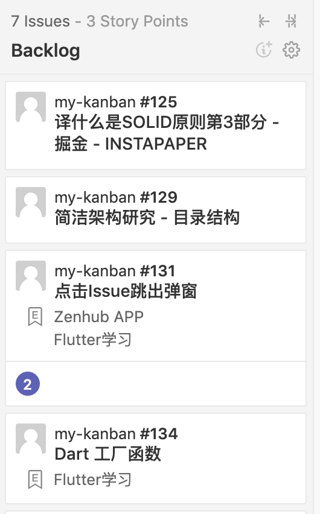
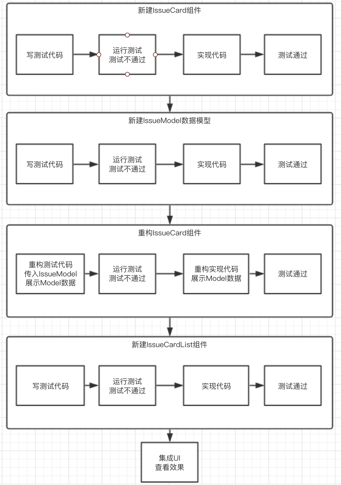
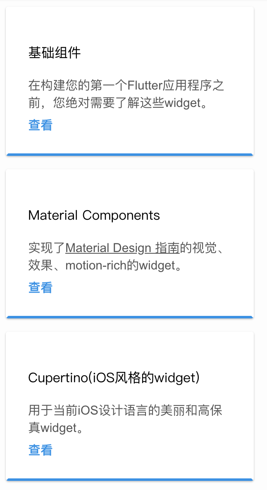
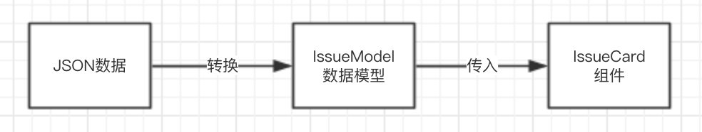
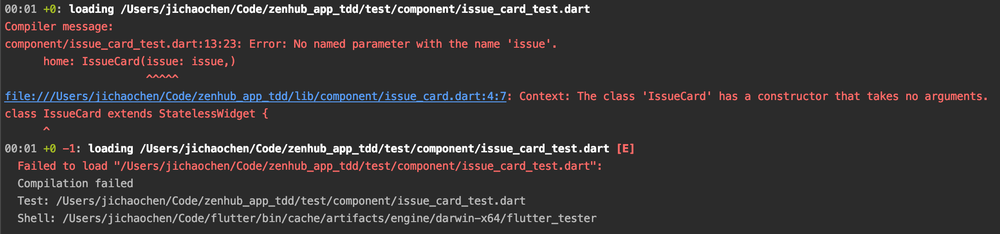
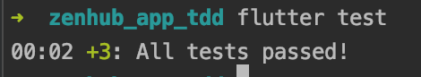
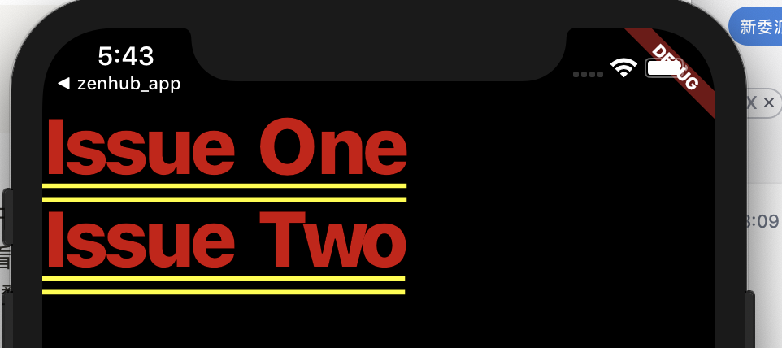

Flutter & TDD 实践（一）：组件和列表
我们要实现的东西整体效果草图：

在第一部分的实践中，我们会用4个TDD周期实现两个组件（IssueCard和IssueCardList）和一个Model。
总共有有四个TDD周期：
- IssueCard部分
- IssueModel数据模型部分
- 重构IssueCard部分
- IssueCardList列表部分
步骤如下：

可以看到，除了在最后，我们都没有跑过一次项目构建，也没有通过看最终效果来验证我们的代码有没有问题就把逻辑写完了。
这和以前的开发思维有很大的不同。
传统开发可能写一行代码但是害怕代码有问题，于是我们会run一次看看最终效果。这一步骤被我们用测试代替了，把我们害怕的内容前置到测试阶段，之后就心无旁骛的写我们的实现了，不会再害怕代码出错，任何修改都有测试代码保驾护航。
第一个TDD周期：IssueCard组件
测试代码
先快速写一个测试，我们要一个IssueCard组件，这个组件有一个test title的文本。
import 'package:flutter/material.dart';
import 'package:flutter_test/flutter_test.dart';
import 'package:zenhub_app_tdd/component/issue_card.dart';
void main() {
testWidgets('Issue card component', (WidgetTester tester) async {
await tester.pumpWidget(new MaterialApp(
home: IssueCard()
));
expect(find.text('test title'), findsOneWidget);
});
}写完跑一次测试，确保这个测试已运行且不通过。
分析
在实现逻辑使测试通过之前，我们先搞清楚测试用例的代码，有如下方法和实例：
- 测试相关：
testWidget、WidgetTester、pumpWidget、expect - 业务相关：
MeterialApp、IssueCard
组件测试代码模板
testWidgets是 test 方法的升级版，其提供 WidgetTester 实例，WidgetTester主要有三部分功能：
- 提供
pumpWidget方法，用于在测试环境中挂载和渲染组件 - 提供
pump和pumpAndSettle用于重新渲染组件 - 提供模拟用户行为的功能，如点击、滚动、查询组件等。
因此在一个组件的测试代码模板是这样的：
void main() {
testWidgets('Description', (WidgetTester tester) async {
await tester.pumpWidget(YourComponent);
expect(A), B);
});
}之后在 tester.pumpWidget中挂载我们要测试的组件即可。
我们可以将这一套代码加入编辑器的模板代码库中，提高编写新建用例时的速度。
MaterialApp/CupertinoApp
在第一个测试的代码中，我们看到IssueCard组件被MaterialApp包装起来了:
await tester.pumpWidget(new MaterialApp(
home: IssueCard()
));那么 MaterialApp是什么呢?
MaterialApp 是官方提供的Material设计风格的组件库，用于统一设计风格、快速开发。其提供了大量的组件，包括了App结构、导航以及各种常用控件，具体可查阅官方文档。
如果在组件用使用了 MaterialApp 提供的组件，那么需要用 MaterialApp 来作为父节点提供运行环境。
同理， CupertinoApp 是IOS风格的组件库，使用方法和 MaterialApp 一致。

断言
expect(find.text('test title'), findsOneWidget);断言语句很简单，expect的入参有两个：目标和结果。
当目标符合结果时，通过测试，反之不通过。
显然上面代码意思是：在挂载的组件中找 test title 关键字， 若找到且只有一个组件则通过测试。
除了 findsOneWidget 之外还有 findsNothing、 findsWidgets、 findsNWidgets
分别是：
findsNothing：没有该组件findsWidgets：找到有多个组件findsNWidgets：找到特定数量的组件，如findsNWidgets(2)
第一个TDD周期：实现代码
接下来我们将实现代码，让测试通过。
import 'package:flutter/material.dart';
import 'package:zenhub_app_tdd/model/issue.dart';
class IssueCard extends StatelessWidget {
@override
Widget build(BuildContext context) {
return Container(
child: Text('test title'),
);
}
}几行代码使测试通过，用一个 Container 组件包含一个显示 test title 的 Text 组件。
代码足够简单也无需重构，所以我们快速的完成第一个TDD周期。
第一个TDD周期所做的事情非常简单，也需要非常简单。
以后的每一个TDD周期也是如此简单（代码量少和颗粒度小）。
第二个周期：Issue Model
这时我们还不能传入自定义参数给组件展示，于是我们开始第二个TDD周期
在Dart中，我们不能像JS一样直接接收JSON并直接使用。
为此我们需要一个类，JSON作为构造函数的入参。
实例化后的对象拥有JSON一样的属性和值

具体用法可以看下面的测试代码（可见测试代码也是可以当文档用的）
测试
有了想法后开始写测试：
void main() {
test('should Issue model from json', () {
Issue issue = Issue.fromJson({
'title': 'test title'
});
expect(issue.title, equals('test title'));
});
}分析
Dart的构造函数
在Dart中，实例化一个类时 new 关键字是可以省略的，所以 new A() 也等于 A()
另外Dart是可以拥有具名构造函数的，所以构造函数名字可以为 ClassName 或者 ClassName.identifier
我们通过 Issue.fromJson 具名构造函数来实例化 Issue：
实现代码
1 | class Issue { |
代码也非常简单，接收json数据，逐一赋值到内部属性。
这种方法适合小型项目，手工维护属性，成本不高。
如果在大型项目中使用，可以使用第三方库，更加方便灵活的处理第三方数据→对象属性。
在Flutter中，在处理JSON数据时我们需要自己进行转换或者使用第三方库，可见官方文档
第三个周期：重构IssueCard组件
在第一个周期中实现的 IssueCard 是写死的title，现在我们需要从外部传入第二周期中写的 IssueModel。
先重构测试代码， IssueCard 传入 issue 对象
import 'package:flutter/material.dart';
import 'package:flutter_test/flutter_test.dart';
import 'package:zenhub_app_tdd/component/issue_card.dart';
import 'package:zenhub_app_tdd/model/issue.dart';
void main() {
testWidgets('Issue card component', (WidgetTester tester) async {
Issue issue = Issue.fromJson({
'title': 'test title'
});
await tester.pumpWidget(new MaterialApp(
home: IssueCard(issue: issue,)
));
expect(find.text('test title'), findsOneWidget);
});
}IssueCard 传入 IssueModel，期望显示 test title 这个字符串
这时我们运行测试，确保这个测试是不通过的。

如我们所愿，测试报错了，接下来我们要做的是：
在
IssueCard中添加构造函数，入参为IssueIssueCard的title替换为传入的issue.titleimport ‘package:flutter/material.dart’;
import ‘package:zenhub_app_tdd/model/issue.dart’;class IssueCard extends StatelessWidget {
final Issue issue;IssueCard({this.issue});
@override
Widget build(BuildContext context) {return Container( child: Text(issue.title), );}
}
再跑一次测试：

All test passed !!
有没有很爽的感觉
除了工程默认测试，我们写了两个测试，并重构了其中一个。
整个过程你会发现，你并没有run你的工程，没有看你的实现效果，也没有调试的过程。
这是一心一意写代码，没有其他干扰的三个TDD周期，完成了一个IssueCard组件，和Issue模型。
那么接下来我们要集成进我们的页面显示了。
第四个周期：集成进UI
我们希望在首页展示一个 IssueCard 列表，所以我们新建一个 IssueCardListView 组件和测试。
重构所有展示的组件以 view 结尾。
和之前的套路一样，写一个 IssueCardListView 组件的测试。
我们期望传入一个 IssueCard 组件的列表，并展示：
void main() {
testWidgets('should IssueCardListView show IssueCard List', (WidgetTester tester) async {
// Given
IssueModel issueOne = IssueModel.fromJson({
'title': 'Issue One'
});
IssueModel issueTwo = IssueModel.fromJson({
'title': 'Issue Two'
});
IssueCardView issueCardOne = IssueCardView(issue: issueOne);
IssueCardView issueCardTwo = IssueCardView(issue: issueTwo);
List<IssueCardView> issueCardList = [issueCardOne, issueCardTwo];
// When
IssueCardListView issueCardListView = IssueCardListView(issueCardList: issueCardList);
await tester.pumpWidget(new MaterialApp(
home: issueCardListView
));
// Then
expect(find.text('Issue One'), findsOneWidget);
expect(find.text('Issue Two'), findsOneWidget);
});
}可见， IssueModel 和 IssueCard 都是之前实现的内容，只是现在用这些来作为测试数据。
我们需要新加的内容只是 IssueCardList 组件的测试。
组件代码实现如下。
class IssueCardListView extends StatefulWidget {
final List<IssueCardView> issueCardList;
IssueCardListView({Key key, this.issueCardList}) : super(key: key);
@override
_Home createState() => _Home();
}
class _Home extends State<IssueCardListView> {
@override
Widget build(BuildContext context) {
return ListView.builder(
itemCount: widget.issueCardList.length,
itemBuilder: (context, index) {
return widget.issueCardList[index];
});
}
}展示
接下来一步便是在MyApp中展示我们的IssueCardListView，我们不会添加MyApp的测试，因为这是属于集成测试了，而不关乎我们的单元代码。
void main() => runApp(MyApp());
class MyApp extends StatelessWidget {
@override
Widget build(BuildContext context) {
IssueCardView issueCardViewOne = IssueCardView(issue: IssueModel.fromJson({
'title': 'Issue One'
}),);
IssueCardView issueCardViewTwo = IssueCardView(issue: IssueModel.fromJson({
'title': 'Issue Two'
}),);
List<IssueCardView> issueCardViewList = [issueCardViewOne, issueCardViewTwo];
return MaterialApp(
title: 'Flutter Demo',
theme: ThemeData(
primarySwatch: Colors.blue,
),
home: IssueCardListView(issueCardList: issueCardViewList,),
);
}
}目前我们甚至还未run过我们的项目，
那么我们跑run一次项目，看看最终效果吧。

Done~
我们期望的拥有 Issue One 和 Issue Two 的列表正常展示了。
当然目前我们没有加任何的样式，只是完成了逻辑，所以UI非常的丑陋。
接下来我们需要往里面加样式了，而加样式就不需要写测试了。
总结
目前我们实践了4个TDD周期。无一例外的，我们都遵循以下流程：
- 快速写出小颗粒测试，使测试不通过
- 快速实现通过小颗粒测试的代码，使测试通过
- 重构，如命名
如果只是通过测试来完成实现代码的话，我们会发现不需要顾虑其他的事情，而我们进行code view，会发现一些问题：
- issueCardList我们应该在哪更新呢？
- 获取数据的业务代码还没设计呢
- 。。。。
这些关于设计的问题，我们在第零篇说过，有两种设计思路：
- 重构驱动实现设计
- 重构驱动设计并实现
本篇目前所遵循的是第二种，由测试去驱动一切，包括设计。剩下的在功能继续增加时，继续重构出符合需求的设计就好了。
在下篇中，将会在这基础上添加数据请求、数据更新的内容。